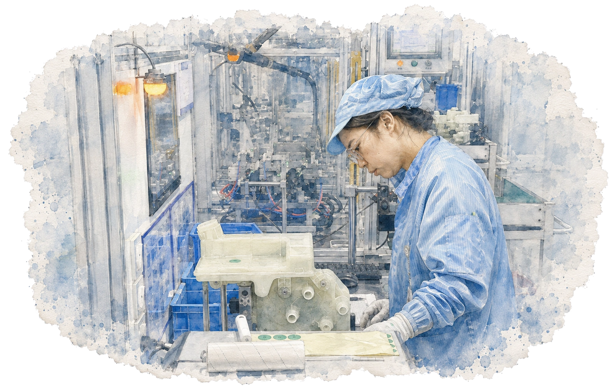
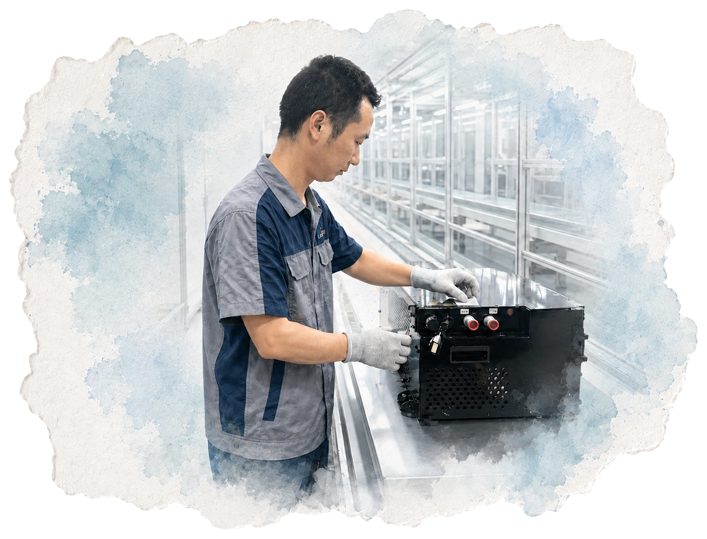
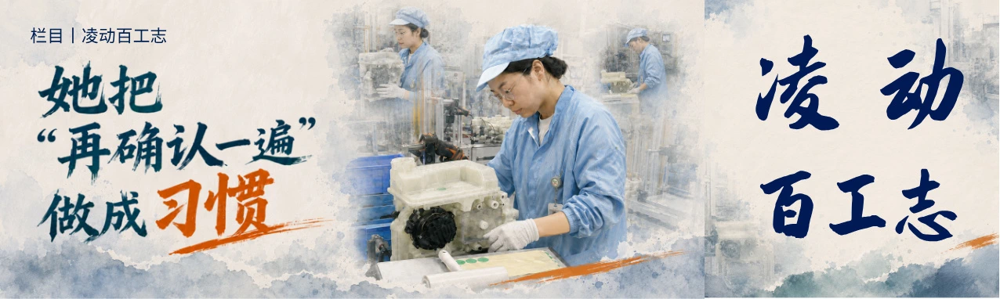
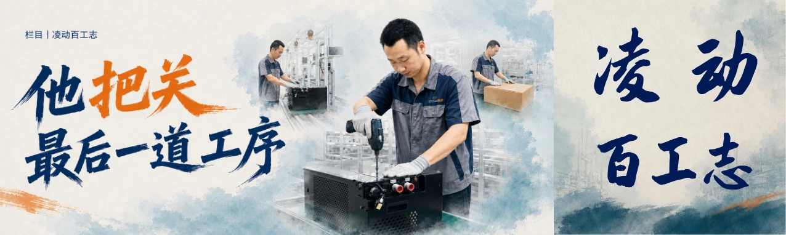

A / 罗玉国
每一次需要，
他都能顶上
他的故事并不是“工作认真”，而是在多个临时任务、跨岗位支援与产能压力场景里，当现场需要有人补位时，他一次次站了出来。
从永康基地支援，到杭州临时交付任务，岗位和场景不断变化。真正反复出现的并不是某一种技能，而是一个很简单的动作：
哪里需要，就去哪里。Support / Adaptability / Responsibility


在制造业企业中，很多员工故事天然从“优秀员工”“产线之星”等荣誉开始。
但如果只沿着荣誉写下去，人物很容易最终变成同一种表达：认真、负责、敬业、坚守。
《凌动百工志》尝试做的，是从荣誉之外继续追问：他做过什么？什么行为反复发生？哪个具体瞬间最能说明这个人？


企业内容需要持续更新，但制造业大量业务项目又受到客户、技术和保密边界限制。员工人物因此成为相对稳定、真实且可以持续观察的内容来源。
新的问题随之出现：如果每一篇都从“认真负责、爱岗敬业”开始，人物最终还是会被写成同一个人。
I wasn’t looking for another “excellent employee”.
I was looking for the detail that made this person different.
他的故事并不是“工作认真”，而是在多个临时任务、跨岗位支援与产能压力场景里，当现场需要有人补位时，他一次次站了出来。
从永康基地支援，到杭州临时交付任务，岗位和场景不断变化。真正反复出现的并不是某一种技能，而是一个很简单的动作：
哪里需要，就去哪里。

从测试、组装到终检，岗位虽然变化，但她反复出现的工作习惯始终一致：做完以后，再确认一遍。
重复性的工作最容易让人依赖熟练。但在她的工作里，熟练并不意味着省略确认。检测完成，再确认；发现不一致，就回头查清楚。
人物真正值得被记住的，不是“认真”这个形容词，而是一个具体、持续发生的工作习惯。终检下线位于产品离开产线之前。这个岗位的价值并不来自复杂的口号，而来自最后一次判断：这台产品，现在能不能离开这里？
在生产流程最后，他面对的是已经完成前序制造的产品。确认状态、检查细节、发现异常、完成最后把关。
“最后一道工序”，成为这个人物最准确的故事入口。

栏目需要形成辨识度，但系列感不意味着复制模板。视觉不是在文章完成以后再“配一张海报”，它和人物主题一起参与内容表达。
真实人物 / 工作现场水墨质感 / 撕页结构岗位判断 / 视觉主题


做完几篇人物稿后，我越来越在意一件事：企业文化内容很容易先拿着价值观去寻找一个能够证明它的人。
但真正有生命力的故事，往往是反过来的。先看见一个具体的人，看见他在真实工作里反复做出的选择，最后再理解这些行为意味着什么。
文化不是先给人物贴上标签。它也可以从真实工作里，被慢慢识别出来。
Culture becomes believable when it already exists in the way people work.
这一案例重点呈现的是：选题判断、人物采访、故事方向、内容筛选、视觉方向与最终交付。
文章生产与视觉制作涉及协同完成，这里不把所有环节表述成“全部由我独立完成”。